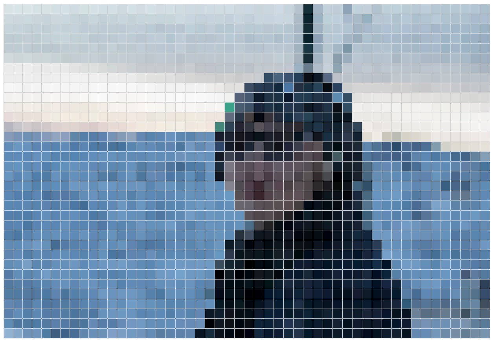
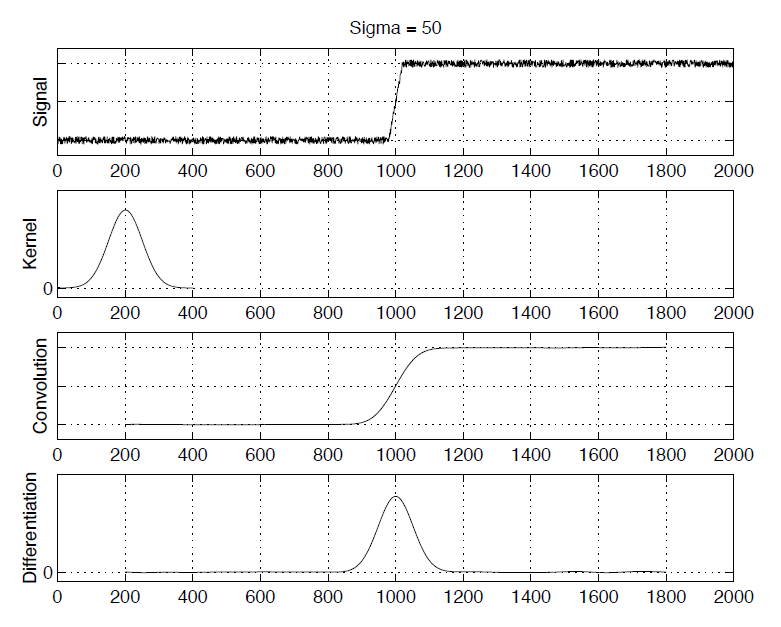
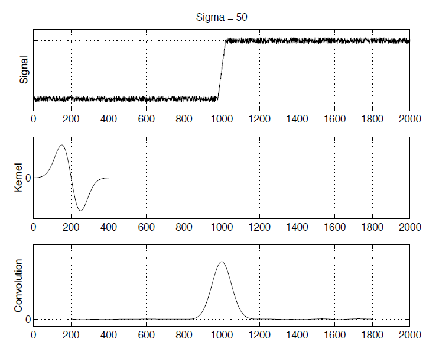
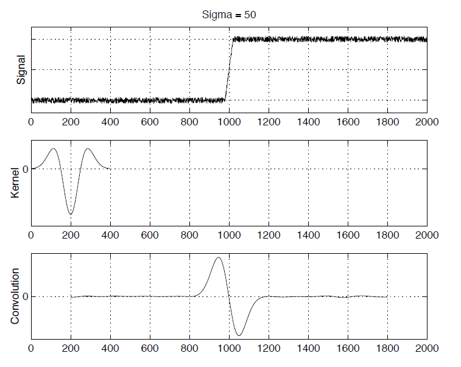
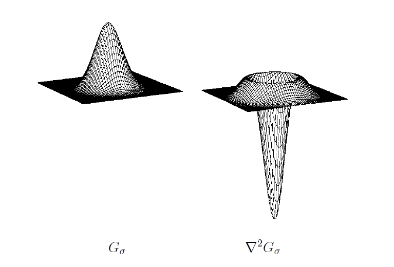
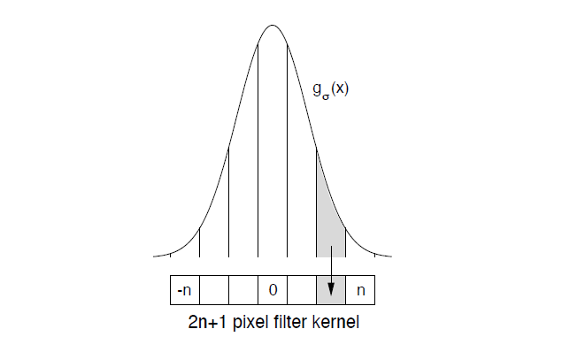
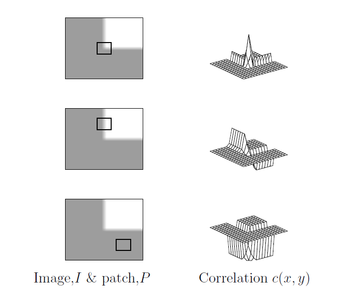
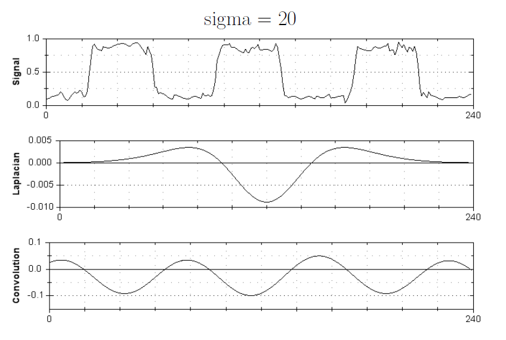
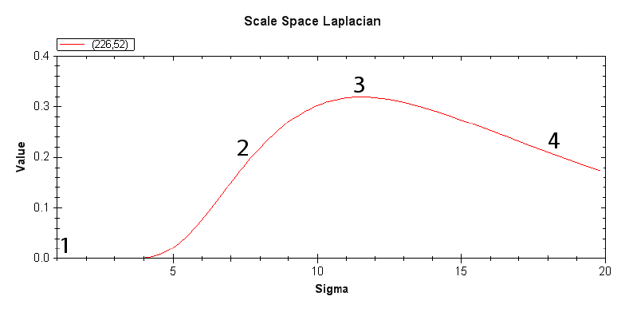
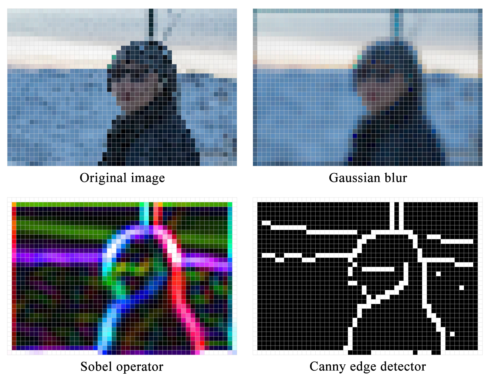

Visualization for Image Processing Algorithms
Last edited on: July 17, 2021 1:06 PM
In image processing, a kernel, convolution matrix, or mask is a small matrix. It is used for blurring, sharpening, embossing, edge detection, and other useful algorithms for feature extraction and matching. This process is accomplished by doing a two dimensional convolution between a kernel and an image. This project aims to visualize the process of such algorithms. See the algorithms in action on Image Processing Visuailizer.

Image processing algorithms for feature extraction
1D edge detection
A broad overview of 1D edge detection is to convolve the signal $I(x)$ with a Gaussian kernel $g_\sigma(x)$ and call the smoothed signal $s(x)$. Then compute the derivative $s^{‘}(x)$ and find its maxima and minima. Use thresholding on the magnitude of extrema to mark edges.
$$g_{\sigma}(x) = \frac{1}{\sigma\sqrt{2\pi}} e^{-\frac{x^2}{2\sigma^2}}$$
$$s(x) = g_{\sigma}(x) * I(x) = \int_{-\infty}^{\infty} g_{\sigma}(u)I(x-u)du = \int_{-\infty}^{\infty} g_{\sigma}(x-u)I(u)du$$

The differentiation is also performed by a 1D convolution. However, we can compute $s^{‘}(x)$ by convolving only once using the derivative theorem of convolution:
$$s^{‘}(x) = \frac{d}{dx} \left[ g_{\sigma}(x) * I(x) \right] = g_{\sigma}^{‘}(x) * I(x)$$

Looking for maxima and minima of $s^{‘}(x)$ is the same as looking for zero-crossings of $s^{‘’}(x)$. In many implementations of edge detection algorithms, the signal is convolved with the Laplacian of a Gaussian (LoG) $g_{\sigma}^{‘’}$:
$$s^{‘’}(x) = g_{\sigma}^{‘’} * I(x)$$

In multi-scale edge detection, using a small $\sigma$ brings out all the edges. As $\sigma$ increases, the signal is smoothed more and more and only the central edge survives. The amount of smoothing controls the scale at which we analyse the image. Fine scale edge detection is particularly sensitive to noise.
2D edge detection
The 1D edge detection scheme can be extended to work in two dimensions. First we smooth the image $I(x, y)$ by convolving with a 2D Gaussian $G_{\sigma}(x, y)$:
$$G_{\sigma}(x, y) = \frac{1}{2\pi\sigma^2} e^{-\frac{x^2+y^2}{2\sigma^2}}$$
$$S(x, y) = G_{\sigma}(x, y) * I(x, y) = \int_{-\infty}^{\infty} \int_{-\infty}^{\infty} G_{\sigma}(u, v)I(x-u, y-v)dudv$$
The next step is to find the gradient of the smoothed image $S(x, y)$ at every pixel:
$$\Delta S = \Delta (G_{\sigma} * I) = \begin{bmatrix} \frac{\partial (G_{\sigma} * I)}{\partial x} \\ \frac{\partial (G_{\sigma} * I)}{\partial y} \end{bmatrix} = \begin{bmatrix} \frac{\partial G_{\sigma}}{\partial x} * I \\ \frac{\partial G_{\sigma}}{\partial y} * I \end{bmatrix}$$
The next stage of the edge detection algorithm is non-maximal suppression. Edge elements, or edgels, are placed at locations where $|\Delta S|$ is greater than local values of $|\Delta S|$ in the directions $\pm \Delta S$. This aims to ensure that all edgels are located at ridge-points of the surface $|\Delta S|$. Subsequently, the edgels are thresholded, so that only those with $|\Delta S|$ above a certain value are retained.
An alternative approach to edge detection is to find zero-crossings of $\Delta^{2}G_{\sigma} * I$, where $\Delta^{2}G_{\sigma}$ is the Laplacian of $G_{\sigma}$.

Implementation details
In practice, the image and filter kernels are discrete quantities and the convolutions are performed as truncated summations:
$$S(x, y) = \sum_{u=-n}^{n} \sum_{u=-n}^{n} G_{\sigma}(u, v)I(x-u, y-v)$$

For acceptable accuracy, kernels are generally truncated so that the discarded samples are less than $1/1000$ of the peak value. The 2D convolutions would appear to be computationally expensive. However, they can be decomposed into two 1D convolutions:
$$G_{\sigma}(x, y) * I(x, y) = g_{\sigma}(x) * \left[g_{\sigma}(y) * I(x, y) \right]$$
Differentiation of the smoothed image is also implemented with a discrete convolution. By considering the Taylor-series expansion of $S(x, y)$ it is easy to show that a simple finite-difference approximation to the first-order spatial derivative of $S(x, y)$ is given by:
$$\frac{\partial S}{\partial x} = \frac{S(x+1, y) - S(x-1, y)}{2}$$
This is equivalent to convolving the rows of image samples, $S(x, y)$, with the kernel:
$$\begin{bmatrix} 1/2 & 0 & -1/2 \end{bmatrix}$$
Corner detection
In an image, a corner is characterized by an intensity discontinuity in two directions. This discontinuity can be detected using correlation. The normalized cross-correlation function measures how well an image patch $P(x, y)$ matches other portions of the image, $I(x, y)$, as it is shifted from its original location. It entails sliding the patch over the image, computing the sum of the products of the pixels and normalizing the result:
$$c(x, y) = \frac{\sum_{u=-n}^{n} \sum_{u=-n}^{n} P(u, v)I(x+u, y+v)}{\sqrt{\sum_{u=-n}^{n} \sum_{u=-n}^{n} P^{2}(u, v) \sum_{u=-n}^{n} \sum_{u=-n}^{n} I^{2}(x+u, y+v)}}$$
A patch which has a well-defined peak in its correlation function can be classified as a “corner”.

A practical corner detection algorithm calculates change in intensity in direction $\mathbf{n}$ and smooths the result by convolution with a Gaussian kernel:
$$I_{n} \equiv \Delta I(x, y) \cdot \mathbf{n} \equiv \begin{bmatrix} I_{x} & I_{y} \end{bmatrix}^{T} \cdot \mathbf{n} \equiv \begin{bmatrix} \frac{\partial I}{\partial x} & \frac{\partial I}{\partial y} \end{bmatrix}^{T} \cdot \mathbf{n}$$
$$I_{n}^{2} = \frac{\mathbf{n}^{T} \Delta I \Delta I^{T} \mathbf{n}}{\mathbf{n}^{T} \mathbf{n}} = \frac{\mathbf{n}^{T} \begin{bmatrix} I_{x}^{2} & I_{x}I_{y} \\ I_{x}I_{y} & I_{y}^{2} \end{bmatrix} \mathbf{n}}{\mathbf{n}^{T} \mathbf{n}}$$
$$C_{n}(x, y) = G_{\sigma}(x, y) * I_{n}^{2} = \frac{\mathbf{n}^{T} \begin{bmatrix} \langle I_{x}^{2}\rangle & \langle I_{x}I_{y}\rangle \\ \langle I_{x}I_{y}\rangle & \langle I_{y}^{2}\rangle \end{bmatrix} \mathbf{n}}{\mathbf{n}^{T} \mathbf{n}} \equiv \frac{\mathbf{n}^{T} A \mathbf{n}}{\mathbf{n}^{T} \mathbf{n}}$$
Elementary eigenvector theory shows that $\lambda_{1} \leq C_{n}(x, y) \leq \lambda_{2}$ where $\lambda_{1}$ and $\lambda_{2}$ are the eigenvalues of $A$. Therefore, image structure around each pixel can be classified by looking at the eigenvalues:
- No structure (smooth variation): $\lambda_{1} \approx \lambda_{2} \approx 0$
- 1D structure (edge): $\lambda_{1} \approx 0$, $\lambda_{2}$ large (normal to edge)
- 2D structure (corner): $\lambda_{1}$ and $\lambda_{2}$ both large and distinct
Corners are most useful for tracking in image sequences or matching in stereo pairs.
Blob detection
A blob is an area of uniform intensity in the image. The minimum of the resulting response from the scale-normalised Laplacian of the Gaussian at the correct scale localises the centre of the dots:

The size of the blob detected depends on the sigma of the detector used. As the sigma is increased, larger and larger image features are detected, ranging from small boxes to entire buildings. The (scale-normalised) Laplacian of a Gaussian as recorded at a particular location is a smooth function over scale, with definite peaks or troughs. These maxima and minima occur at the centre of blobs whilst the scale defines its size.

The Difference of Gaussians (DoG) is a blob detector. It is calculated as the difference of two Gaussians, which approximates the scalenormalised Laplacian of a Gaussian.
$$G(x, y, k\sigma) - G(x, y, \sigma) \approx (k - 1)\sigma^{2} \Delta^{2} G(x, y, \sigma)$$
Kernels used for image processing algorithms
Image Processing Visuailizer features a collection of commonly used kernels for image processing and feature extraction. In practice, the kernels are convoluted across the image to produce the desired output.

Box blur
A box blur (also known as a box linear filter) is a spatial domain linear filter in which each pixel in the resulting image has a value equal to the average value of its neighbouring pixels in the input image. It is a form of low-pass (“blurring”) filter.
$$\mathbf{G} = \frac{1}{9} \begin{bmatrix}1 & 1 & 1\\1 & 1 & 1\\1 & 1 & 1\end{bmatrix} * \mathbf{A}$$
Box blurs are frequently used to approximate a Gaussian blur. By the central limit theorem, repeated application of a box blur will approximate a Gaussian blur.
Gaussian blur
In image processing, a Gaussian blur (also known as Gaussian smoothing) is the result of blurring an image by a Gaussian function. Mathematically, applying a Gaussian blur to an image is the same as convolving the image with a Gaussian function. This is also known as a two-dimensional Weierstrass transform.
$$G(x,y) = \frac{1}{2\pi\sigma^2} e^{-\frac{x^2+y^2}{2\sigma^2}}$$
Gaussian smoothing is also used as a pre-processing stage in computer vision algorithms in order to enhance image structures at different scales.
Sobel operator
The operator uses two 3×3 kernels which are convolved with the original image to calculate approximations of the derivatives – one for horizontal changes, and one for vertical.
$$\mathbf{G}_x = \begin{bmatrix}+1 & 0 & -1\\+2 & 0 & -2\\+1 & 0 & -1\end{bmatrix} * \mathbf{A}$$
$$\mathbf{G}_y = \begin{bmatrix}+1 & +2 & +1\\0 & 0 & 0\\-1 & -2 & -1\end{bmatrix} * \mathbf{A}$$
The x-coordinate is defined here as increasing in the “right”-direction, and the y-coordinate is defined as increasing in the “down”-direction. At each point in the image, the resulting gradient approximations can be combined to give the gradient magnitude and direction, using:
$$\mathbf{G} = \sqrt{\mathbf{G}_x^2 + \mathbf{G}_y^2}$$
$$\mathbf{\Theta} = \arctan{\frac{\mathbf{G}_y}{\mathbf{G}_x}}$$
Prewitt operator
The operator uses two 3×3 kernels which are convolved with the original image to calculate approximations of the derivatives – one for horizontal changes, and one for vertical.
$$\mathbf{G}_x = \begin{bmatrix}+1 & 0 & -1\\+1 & 0 & -1\\+1 & 0 & -1\end{bmatrix} * \mathbf{A}$$
$$\mathbf{G}_y = \begin{bmatrix}+1 & +1 & +1\\0 & 0 & 0\\-1 & -1 & -1\end{bmatrix} * \mathbf{A}$$
Canny edge detector
The algorithm takes the output of a Sobel operator and categorizes the continuous gradient directions into a small set of discrete directions, and then moves a 3x3 filter over the output of the previous step (that is, the edge strength and gradient directions). At every pixel, it suppresses the edge strength of the centre pixel (by setting its value to 0) if its magnitude is not greater than the magnitude of the two neighbours in the gradient direction.
Documentation
Code for this project can be found in GitHub repository.
Dependencies
Install Express in the root directory and save it in the dependencies list. For example:
1 | |
To install Express temporarily and not add it to the dependencies list:
1 | |
All articles in this blog are used except for special statements CC BY-SA 4.0 reprint policy. If reproduced, please indicate source Ziyi Zhu!